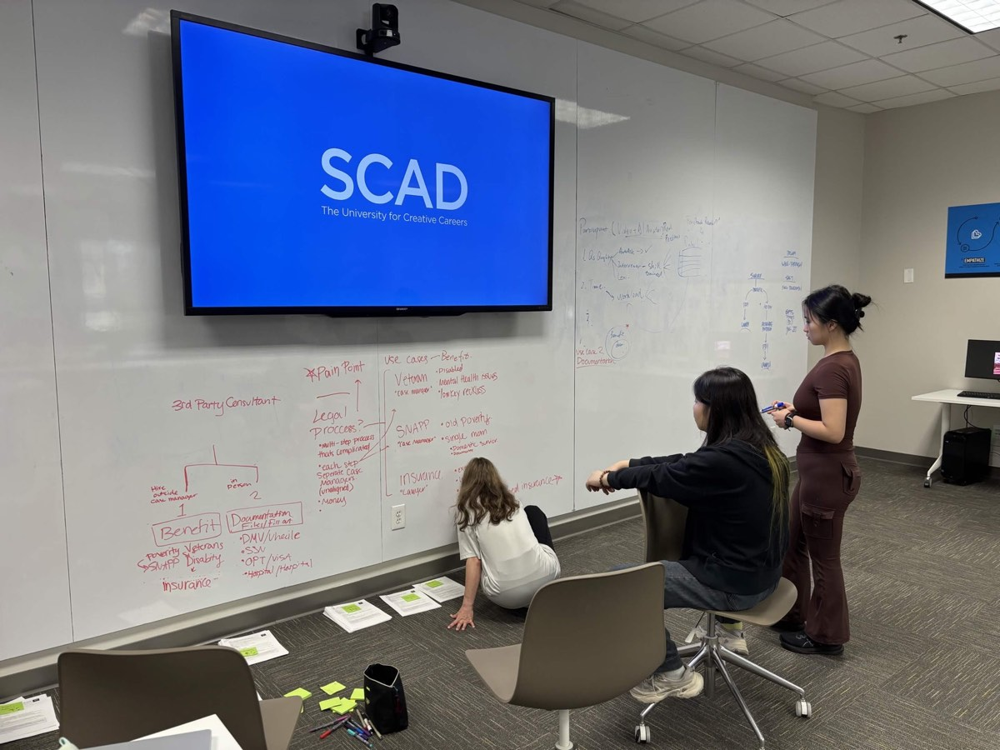
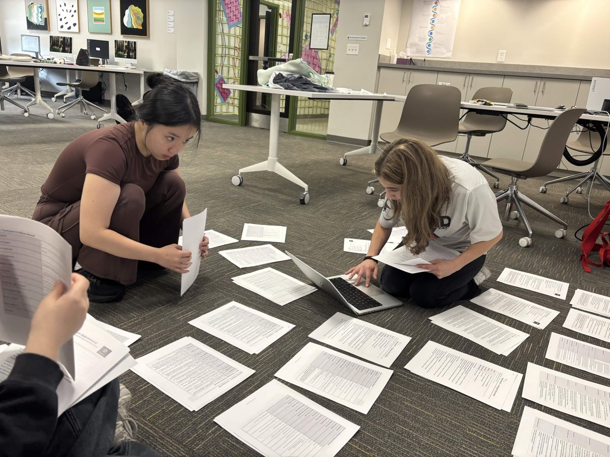

SCADpro × Deloitte Digital / SUMMER 2026 / TEAM RESEARCH
Where should an
AI Avatar help?
Studying government-service experiences to define useful support, clear progress, and the moments that need a person.
I refined interview tools, participated in field interviews, cleaned records, and contributed to affinity analysis and research findings. Our team translated service experiences into opportunities and boundaries for AI assistance.
- MY CONTRIBUTION
- Interview design
Fieldwork & synthesis - TEAM STUDY
- 33 interview participants
236 survey responses - MY OUTPUTS
- Interview materials
Contributions to findings - PROJECT STAGE
- Research report
Service proposals
Study counts describe the team’s work. Service proposals were not deployed or evaluated as product outcomes.

01 / A SERVICE EXPERIENCE
An application becomes a loop.
In the team’s records, one participant seeking food assistance described being directed to call, failing to resolve the issue through that channel, and eventually going to an office. The account raised a question: did each new interaction move the case forward, or ask the person to start again?
- 01Apply for assistance
- 02Follow instructions to call
- 03Remain unresolved
- 04Visit an office
Paraphrase of participant P1_L / LP1 in the team research records; not a verbatim quotation or a universal service journey.
THE RESEARCH QUESTION
When would an Avatar add useful support beyond text, voice, or a person?
The client brief asked us to examine both acceptance and rejection. Human-like appearance creating trust and comfort was a hypothesis to investigate.
02 / MY RESEARCH DECISIONS
Make the interview usable
in the field.
The client supplied a research brief and a pre-demo / demo / post-demo starting structure. I developed questions and follow-up dimensions, then prepared revised materials for government-service intercepts using the team’s existing interview approach.
FOCUS & DEPTH
One story in 5–8 minutes.
I proposed a longer interview window than the two-minute plan because we needed concrete moments, causes and consequences. Core questions and optional probes helped keep the conversation focused.
A planning decision, not an experimentally established optimal duration.
BALANCED EVIDENCE
Keep what worked, too.
I added a positive-experience branch so a successful service encounter could reveal what to preserve. Participants did not need to produce a frustration to fit the script.
QUESTION ORDER
Service first. Solution last.
The field materials retained the rule of asking about a real service experience before introducing support-mode choices. This kept the early conversation focused on the participant’s experience.
CONSISTENT CAPTURE
Give each pair shared tools.
I prepared a short moderator script, a detailed team guide and recorder form, and a field-day action plan covering roles, completeness checks and debriefing.
The materials were broadly used by the team. I also participated in the interviews and later record cleaning, affinity work and finding development.
03 / FROM RECORDS TO FINDINGS
Follow the evidence
through the synthesis.
Our shared board connects participant-labelled excerpts to clusters, themes, ideal experiences and design directions. I contributed to this collaborative analysis; the findings below represent the team’s synthesis.

01 / CONTINUITY
A case should survive a change of channel.
Recorded experience
P3_W described contradictory website and staff instructions. P5_W described caseworker changes and an error affecting benefits.
Affinity interpretation
Conflicting guidance, repeated information and fragmented ownership create rework.
Design direction
Preserve authorized context, make ownership visible, and transfer the case record with a human handoff.
Participant references are separate accounts. Summaries are paraphrases, not quotations.
02 / PROGRESS
Waiting needs more than a “processing” label.
Recorded experience
P1_Q described contacting a service while the response remained “processing.” Other accounts described repeated attempts without a clear next step.
Affinity interpretation
Waiting duration, status uncertainty and lack of ownership are distinct problems.
Design direction
Show the current stage, next required action, responsible owner and expected update. Make true completion explicit.
03 / HUMAN SUPPORT
Human likeness cannot carry human responsibility.
Recorded experience
Records include frustration with automated help and requests for a person who can understand the situation. Sensitive and consequential experiences raised further limits.
Affinity interpretation
Competence, judgment, care and accountability matter alongside the channel’s appearance.
Design direction
Explain automation and its limits. Provide a reachable person when stakes, ambiguity or the need for judgment increase.
The working board may require Figma access. The main evidence paths are summarized here.
04 / RESEARCH INTO INTERACTION REQUIREMENTS
Specify behavior
before choosing a face.
These research directions define what an interface and its underlying service would need to do. They are proposals for further testing, rather than implemented features.
Continue without restarting.
Show a reviewable case summary, let the user confirm what transfers, and identify who takes responsibility next.
Next test: Can a user continue after a handoff without repeating the case?
Make the next action legible.
Distinguish active review, missing information and completion. Show update timing where known and state uncertainty honestly.
Next test: Can a user explain the current status and what they need to do?
Keep human help reachable.
Explain what the system can handle, show an escalation route, and preserve context when a person takes over.
Next test: Can a user recognize the boundary and complete the handoff?
05 / OUTCOME & REFLECTION
A research outcome,
with boundaries.
The team delivered a final research report with service proposals. My contribution connected interview preparation and field participation with record cleaning, affinity analysis and finding development.
What this work supports
Identifying service difficulties, understanding participants’ reasons and emotions, and translating qualitative patterns into interaction requirements.
What remains to test
Whether an Avatar improves task performance compared with text, voice or human support. Reported preference does not establish effectiveness, and the study does not demonstrate a deployed product impact.
Research should shape what gets built.
This project contributes the research side of my practice: specifying useful behavior and limits before implementation. HOVR shows my complementary work building interactive prototypes.
See the HOVR interaction prototype ↗